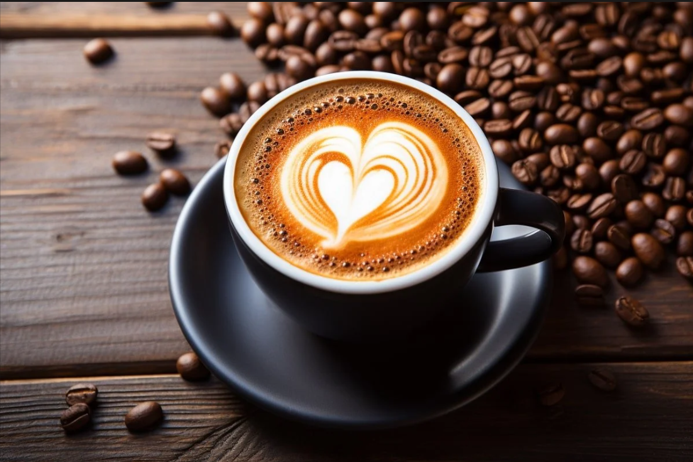

Apa itu Kopi?
Kopi adalah minuman yang berasal dari biji tanaman kopi yang diproses melalui berbagai tahapan sebelum akhirnya diseduh.
Banyak orang menyukai aroma kopi karena memberikan rasa nyaman saat bekerja maupun bersantai.
Jenis Kopi Populer
- Espresso
- Americano
- Cappuccino
- Latte
- Dirty Coffee
Cara Membuat Secangkir Kopi
- Siapkan biji kopi pilihan.
- Giling kopi sesuai metode seduh.
- Panaskan air hingga suhu ideal.
- Seduh kopi selama beberapa menit.
- Nikmati kopi selagi hangat.
Secangkir Kopi

Belajar Lebih Banyak
Ingin mengenal dunia kopi lebih dalam?
Klik di sini untuk Pelajari Dunia Kopi